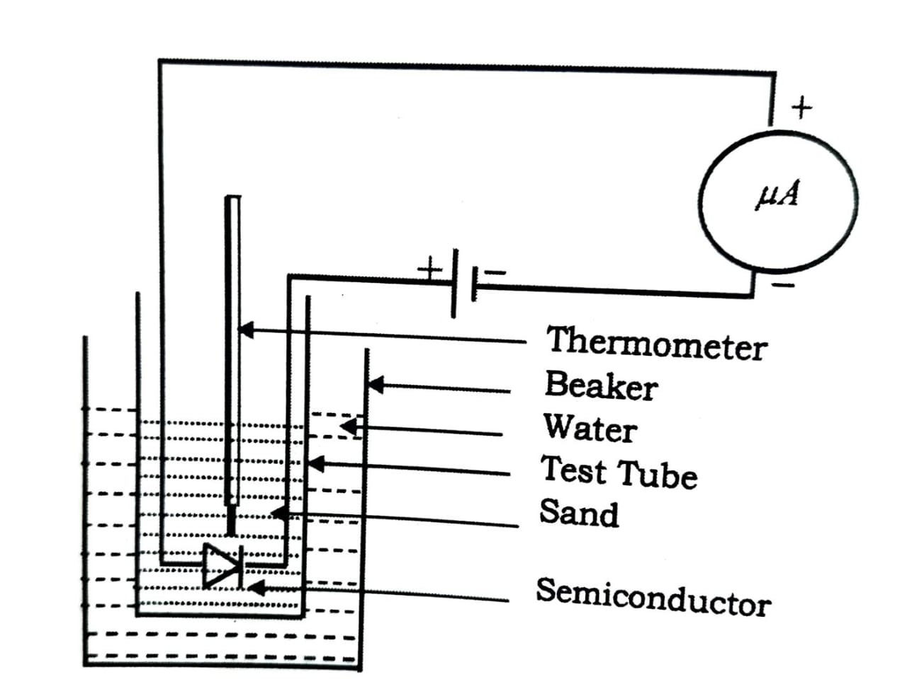

Aim: To determine the forbidden energy gap of a given semiconductor.
Apparatus: P.N junction diode, sand or oil bath, thermometer (100°C), micro-ammeter (50 µA), 1.5V D. C. supply, heating coil, etc.
Prior Concepts: Semiconductor energy band structure, forbidden energy gap, Ohm's law, PN junction diode.
A single isolated atom is characterized by discrete energy levels. In solids, consisting of an aggregate of atoms, the individual energy levels are so close together that they can be considered to be continuous. This series of energy levels form a band.
Valence Band: The band formed by a series of energy levels containing the valence electrons. It may be partially filled or completely filled, depending on the nature of the solid.
Conduction Band: The next higher permitted energy band is the conduction band. Electrons in this band can move freely.
Forbidden Band: The valence band & conduction band are separated by a gap called the forbidden band where no electrons exist.

Resistance (R): R = V / I
Log of Resistance: log10(R)
Reciprocal of Temperature: 1/T
Activation Energy (Eg): Eg = 2 × kB × β